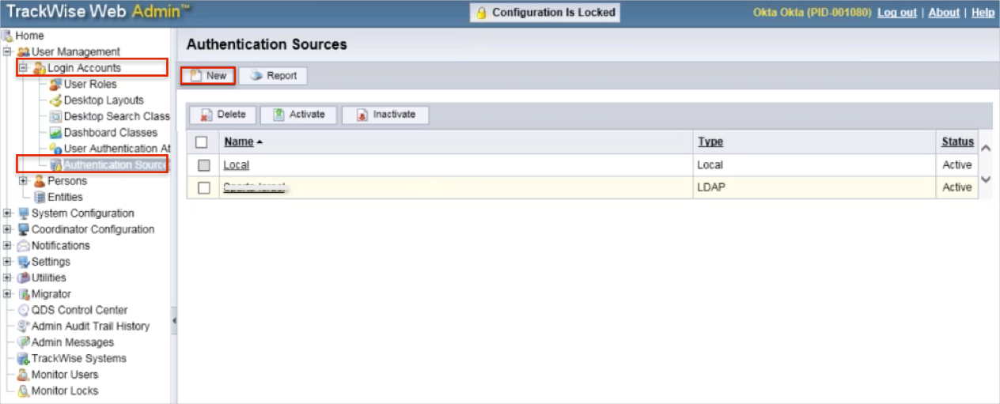
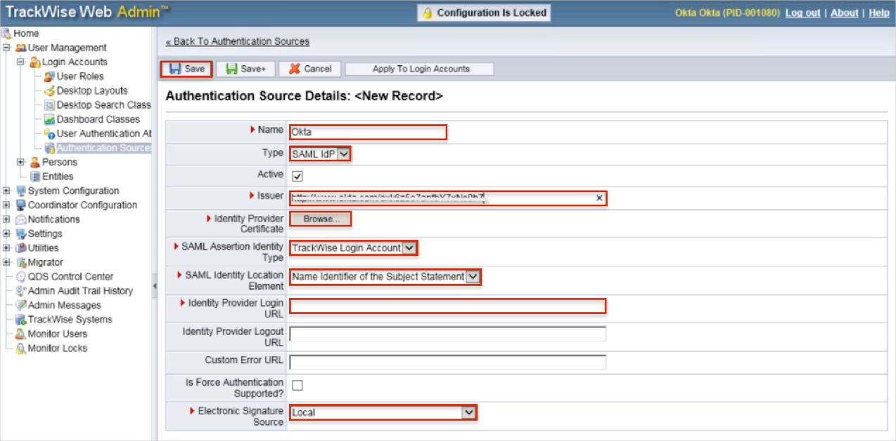
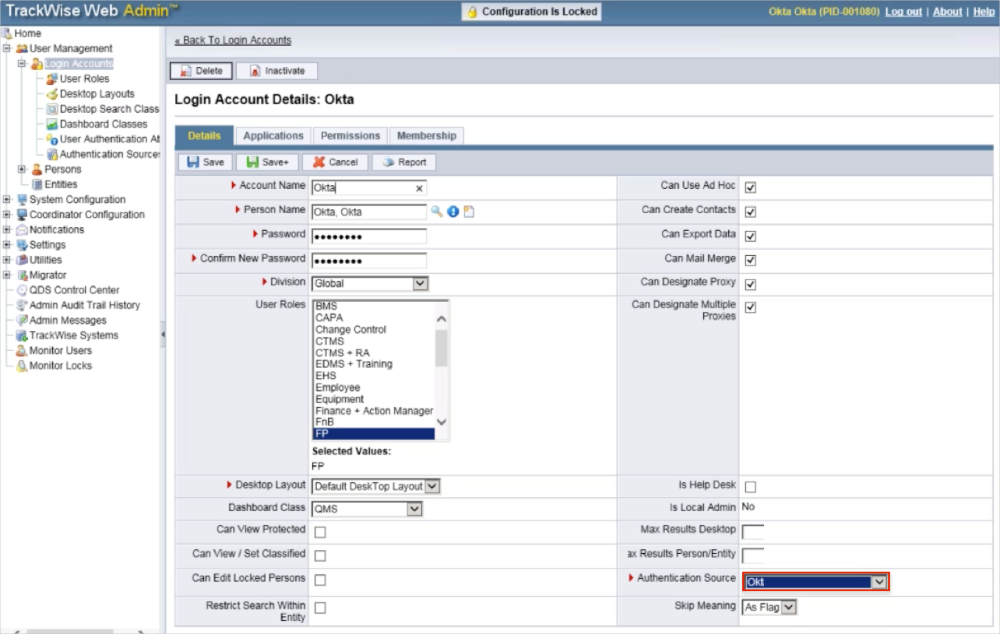
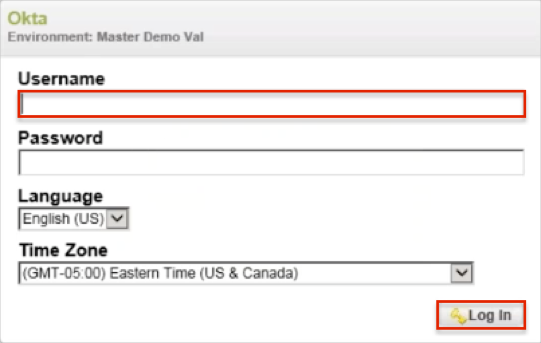

Login to the TrackWise Web Admin.
Navigate to User Management > Login Accounts > Authentication Source.
Click New.

Enter the following (see screen shot at end of step for reference):
Name: Enter Okta.
Type: Select SAML IdP from the dropdown.
Check the Active checkbox.
Issuer: Copy and paste the following:
Sign into the Okta Admin Dashboard to generate this variable.
SAML Assertion Identity Type: Select TrackWise Login Account from the dropdown.
SAML Identity Location Element: Select Name Identifier of the Subject Statement from the dropdown.
Identity Provider Login URL: Copy and paste the following:
Sign into the Okta Admin Dashboard to generate this variable.
Identity Provider Logout URL: Leave this field blank.
Custom Error URL: Leave this field blank.
Check the Is Force Authentication Supported checkbox.
Click Save

To assign Okta Authentication Source for your users:
Navigate to User Management > Login Accounts.
Select a user.
Authentication Source: Select Okta.
Click Save.

Notes:
IDP-initiated flows and SP-initiated flows are supported.
Just In Time (JIT) Provisioning is not supported.
Open your TrackWise Login URL: http://[yourHostName]/trackWiseApp/servlet/TeamAccess/Login.
Enter your Username.
Click Log In.
